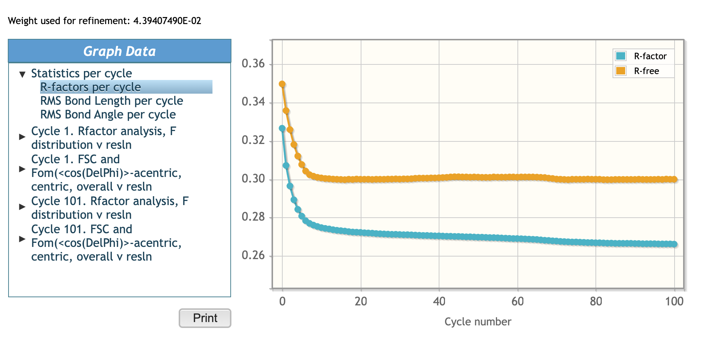

7. Determining the Structure of Twinned Crystals Using Molecular Replacement¶
In this tutorial, we will guide you through the process of determining the structure of twinned crystals using Molecular Replacement. We will use the SH3-like domain from the Penicillium virgatum muramidase as an example (PDB_ID 8B2G).
All data required for this tutorial were already imported into the project. Please look at the import’s task output.
7.1. Step 1: Merge Data with Aimless¶
Since we are dealing with unmerged data, the first step is to merge them using the “Merging and Scaling with Aimless” task:
Click on “Add Task.”
- Go to “All Tasks” > “Data Processing” > “Merging and Scaling with
Aimless.”
Use default parameters and click the “Run” button.
Once the task is finished you can find lots of useful information about the tasks performance in the output tab.
For the purpose of this tutorial, we will pay close attention to the Anisotropy analysis of CC(1/2) and I/sd, 1 graph (can be found in 4. Scaling and merging section, AIMLESS version number). As shown below
Scroll down to Graph Data. Here we want to look at Anisotropy analysis of CC(1/2) and I/sd, 1
And CC1/2 vs resolution graphs.
CC1/2 is a correlation coefficient between two halves of the original dataset with multiple observations distributed randomly between the two halves. This is independent of estimates of σ(I). CC1/2 = 1 means signal, CC1/2 = 0 means noise. Resolution cut off is usually chosen where CC1/2 is between 0.2 and 0.5.
7.2. Step 2: Resolution Cut-off¶
Determine an appropriate resolution cut-off based on the Anisotropy analysis of CC(1/2) and I/sd, 1. Clone the existing “Merging and Scaling with Aimless” task and set the high-resolution cut-off to 1.5 Å in the Basic options menu, as shown below
Then, run the task.
7.3. Step 3: Define Asymmetric Unit Content¶
Define the Asymmetric Unit content:
Click on “Add Task.”
Go to “All Tasks” > “Asymmetric Unit and Structure Revision” > “Asymmetric Unit Contents.”
Run the task.
Note: you can also find tasks by typing Asymmetric Unit Contents in the search bar in the A-Z tab.
7.4. Step 4: Prepare MR Model¶
Since you already have a homology structure, create a Molecular Replacement (MR) model using the “Prepare Single-Chain MR Model(s) from Coordinate Data” task:
Click on “Add Task.”
Go to “All Tasks” > “Molecular Replacement” > “Prepare Single-Chain MR Model(s) from Coordinate Data.”
Use default parameters (Modification protocol: Molrep)
Run the task.
7.5. Step 5: Run Molecular Replacement¶
Created models can now be used in Phaser or Molrep tasks.
In this tutorial we will use Molrep for Molecular Replacement:
Click on “Add Next Job.”
Go to “All Tasks” > “Molecular Replacement” > “Molecular Replacement with Molrep.”
7.6. Step 6: Refinement¶
After finding the MR solution, refine the positioned model with Refmac.
In the early stages of refinement (e.g. straight after MR) it’s advised to run many cycles (up to 200 with jelly body restraints) of refinement. We will run 100 cycles, as shown below
Add the next job.
Go to “All Tasks” > “Refinement and Model Building” > “Refinement with Refmac.”
Run 100 cycles of refinement with jelly-body restrains.
7.7. Step 7: Analyze R Factors¶
Once the Refmac task is finished, check the R factors. If they remain high, it indicates an issue with the data.
To investigate further, return to the Aimless task results.
7.8. Step 8: Check data for twinning¶
Now we will more carefully examine the data to check for the presence of twinning. During the data processing phase, twinning has the potential to hinder us in accurately determining the appropriate space group. If the space group is assumed wrong, the structure cannot be solved and therefore it’s important to identify twinning in the early stages. In some cases, individual crystals of the twin have pseudosymmetry, whose rotational component nearly coincides with the twin operation. In such cases, a pseudosolution in a wrong higher symmetry space group is possible, which might have a high contrast in the MR search, but will eventually fail to refine to reasonable stats (as we have just observed).
L-Test Analysis: The L-test is a statistical test based on experimental merged data and designed to identify twinning without guessing the twin operation. It is nearly insensitive to pseudotranslation and anisotropy of the data and is the most frequently used twinning test in MX. In its “manual” version, we have to compare the experimental cumulative distribution of the statistic L with its theoretical distribution for untwinned data (a straight line). Even a minor deviation from untwinned statistics is a warning sign. The theoretical distribution for perfect twins is usually provided as a reference as well.
Summary Warning: If the L-test indicates that the data may be twinned, you may encounter a warning in the summary section of the Aimless result.
That means that we probably should reconsider the space group of our crystal.
7.9. Step 9: Identify the correct space group¶
In this step, we will determine the most appropriate space group for the crystal based on the presence of screw axes and the information from symmetry determination tables in the Aimless report.
Axial reflections, axis c (lattice frame) screw axis 2(1) graph suggest the presence of Screw Axes
Navigate to the Aimless report page and locate the symmetry determination tables. These tables provide valuable information about the probability of different symmetry elements being present in the crystal.
Data suggest that the 2-fold l (0 0 1) {-h,-k,l} operator (2) is likely to be a crystallographic operation, while the 2-fold k (0 1 0) {-h,k,-l} and 2-fold h (1 0 0) {h,-k,-l} with noticeably lower CC and higher Rs are likely to be two equivalent twin operation.
This led us to the P 1 2/m 1 Laue group and P 1 21 1 space group
Identifying the correct space group is crucial for crystallographic analysis because it defines the symmetry elements and constraints that will be applied during data processing and refinement. Selecting the correct space group ensures that the crystallographic model accurately reflects the crystal’s true symmetry and leads to a more accurate determination of the crystal structure.
{kind=link}
7.10. Step 10: Process Data in Correct Space Group¶
Clone the Aimless task with resolution cut-off and Select P 1 2/m 1 as the Patterson group and P1 21 1 as the space group. As shown below.
Run the task
7.11. Step 10: Repeat Steps 4-8 in New Space Group¶
Repeat Steps 4 to 8 in the new space group (P 1 21 1). Check if the R factors have improved:
As you can see, in the P1 21 1 space group R factors dropped to 0.3, which allows us to perform twin refinement. It is highly advised not to start twin refinement before R drops below 0.4. The reason is that, according to theoretical estimates, switching to twin refinement before this point will likely result in a drop in R-free even if the crystal was not actually a twin crystal.
7.12. Step 11: Twin refinement¶
Run 100 cycles of refinement with jelly-body restrains + change the Refine using the field to Mean Amplitudes assuming twinning.
{kind=link}
While the job is running, the results page will be updated. Summary information will be displayed in the Report tab.
Twinning information can be found in the REFMAC5 log file, which is displayed in the Main Log tab.
Once the job is finished, select the Main Log tab and use your web browser’s search facility (e.g. ctrl+F, cmd+F, Edit->Find,etc.) in order to search for the word twin in the log file. Cycle through the results in order to find information about potential twinning in this dataset.